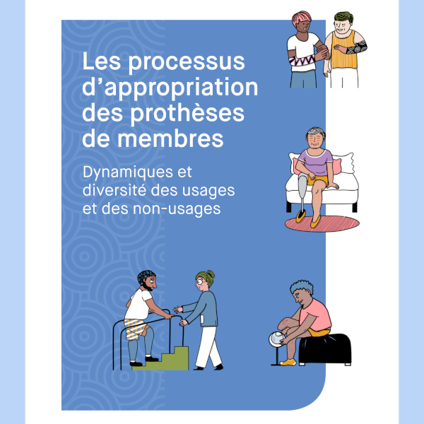

Document APADIP 2024
Rapport APADIP 2024 (abandon et appropriation des prothèses) disponible en format PDF. Rédigé par une équipe composée de Paul Groud, Valentine Gourinat et Lucie Dalibert, chercheurs universitaires et collaborateurs d’ADEPA, le rapport scientifique APADIP est…
lire plus